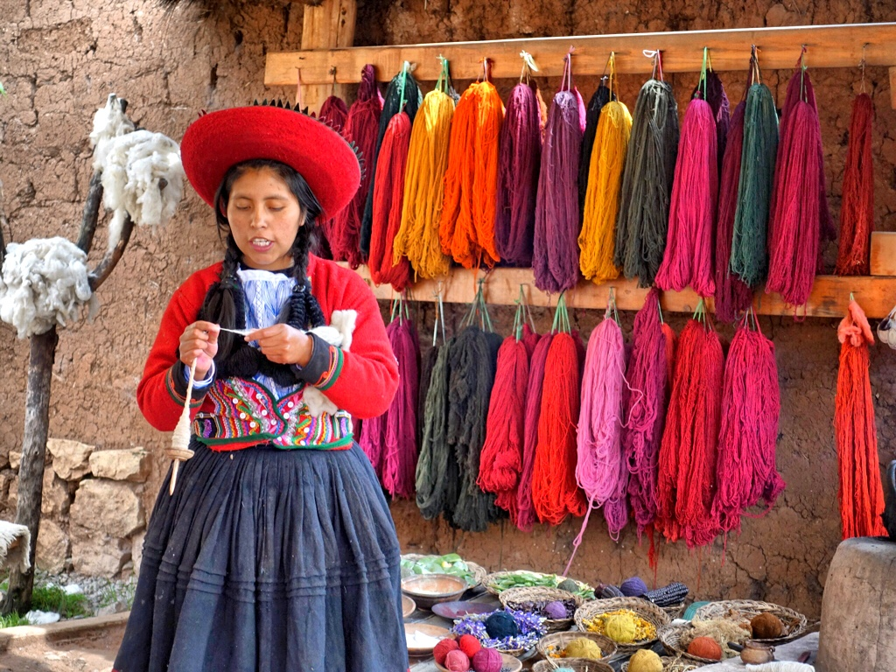
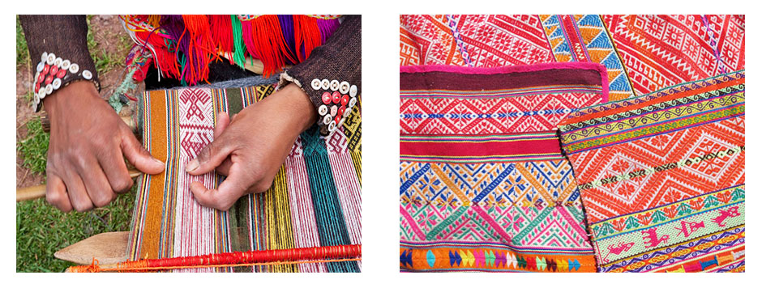

THE WEAVING JOURNEY

PERUVIAN WEAVING: ANCIENT TECHNIQUES
The tradition of weaving stretches back through 5,000 years of history in Peru, from the coastal cities of Paracas and Nazca to the high Andean peaks of Cusco and Ayacucho. In the Andes, traditional Quechua backstrap weavers use the backstrap loom, the oldest form of loom in the world. An entirely non-mechanized instrument, it is constructed with wood, bone, and strings, and is easily portable from home to field, wrapped inside the traditional lliqlla or manta (carrying shawl) that every woman wears. Even today, back-strap weaving is an incredibly important component of identity in the high Andes, as much as the use of natural dyes, traditional alpaca herding and the native Quechua language.

The vast majority of Andean weaving is warp-faced, in which the weft yarns are completely hidden by the warp during the weaving process. As a result, it is entirely the warp which determines the visible color structure and artistic character of the piece. There are several warp-faced weaving techniques common in the Andes:
Complementary warp: It creates a pattern which appears as a positive on one side, and a negative on the other. This is the most common weaving technique in the high Andes.
Supplementary warp: It involves creating a pattern that sits on a background color and appears on only one side of the fabric. This technique involves the introduction of an additional set of warp yarns which are used to create the pattern but are not integral to the structure of the weaving itself. It is a more difficult and much less common technique.
Discontinuous warp: It allows a weaver to create patterns within the warp that change along the length of the fabric. One way to create such a warp is with a six-post horizontal loom. This allows the weaver to interlock two separate warps, each sharing the middle warp bar. Weavings produced with this technique are incredibly complex and beautiful. Currently, this technique is disappearing and is only commonly practiced in a few regions
